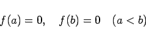
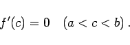

Inhalt Index DeskTop Bronstein

 Differentialrechnung Differentiation von Funktionen einer Veränderlichen Hauptsätze der Differentialrechnung
Differentialrechnung Differentiation von Funktionen einer Veränderlichen Hauptsätze der Differentialrechnung


Wenn eine Funktion y =f(x) in einem abgeschlossenen Intervall [a,b] stetig ist, wenigstens in dem offenen Intervall (a,b) eine Ableitung besitzt und in den Endwerten des Intervalls den Wert Null annimmt, d.h., wenn
|  | (6.28a) |
ist, dann existiert mindestens ein Wert c zwischen a und b derart, daß gilt
|  | (6.28b) |
Die geometrische Bedeutung des Satzes von ROLLE besteht darin, daß eine Funktion y =f(x) die die x-Achse in zwei Punkten A und B schneidet, in diesem Intervall stetig ist, und in jedem inneren Punkt eine nichtvertikale Tangente besitzt, zwischen A und B wenigstens einen Punkt C hat, in dem die Kurventangente parallel zur x-Achse verläuft (linke Abbildung).
Es kann auch mehrere derartige Punkte in dem Intervall geben, z.B. die Punkte C,D und E in der rechten Abbildung. Daß die Forderung nach Stetigkeit und Existenz einer Ableitung in dem Intervall wesentlich ist, kann an Hand der folgenden linken Abbildung erkannt werden, wo die Funktion bei x =d eine Unstetigkeitsstelle besitzt, und an Hand der rechten Abbildung, wo die Funktion im Punkt x =e keine Ableitung besitzt. In beiden Fällen gibt es keinen Punkt C, in dem f'(x) =0 gilt.